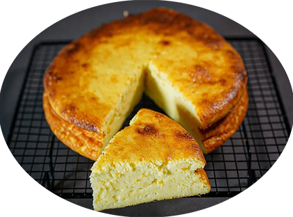

Gâteau fromage blanc

Pour 8 personnes
Préparation : 20 mn
Repos 4 heure minimum
Ingrédients
- 500g de fromage blanc;
- 3 oeufs;
- 100 g de sucre;
- 90g de farine;
- Zeste d'un citron ou 1ccac de vanille liquide;
|
Recette
- 1. Allumer le four sur 180°C
- Mélanger dans une saladier le fromage blanc et le sucre.
- Séparer les blancs des jaunes d'oeufs. Incorporer les jaunes d’œufs au mélange fromage blanc / sucre.
- Ajouter la farine et mélanger.
- Montez les blancs en neige très ferme, et les incorporer délicatement au mélange.
- Verser la préparation fromage blanc, sucre oeuf dans un moule à charnière de 20cm de diamètre environ, préalablement beurré.
- Mettre le gâteau au four à 180°C pendant 30min.
- Au bout de 30 minutes éteindre le four et ouvrir la porte du four qu'il refroidisse tout doucement.
- Après 1h, sortir du four et laisser refroidir plusieurs heures au frais avant de démouler.
|